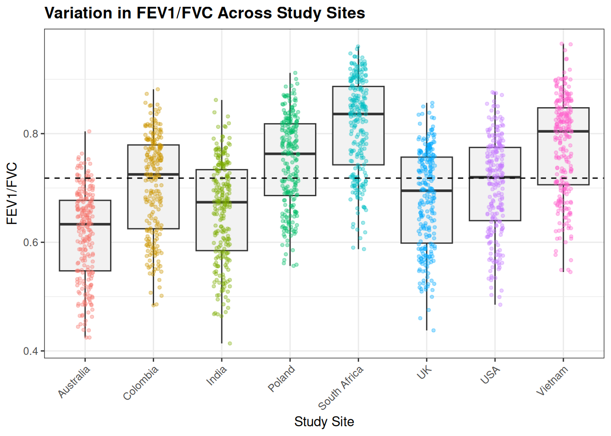

For this chapter we will need the following R packages: dplyrgtlme4broombroom.mixedggplot2performance
Note: Only install these if you have not already, otherwise go straight to library()
Classic regression vs Mixed models: Let’s break it down!
Participant
Description
Person A
45-year-old, non-smoking, male, normal BMI, working in a low-exposure job in Vietnam
Person B
45-year-old, non-smoking, male, normal BMI, working in a low-exposure job in the UK
Key idea
By their fixed-effect variables (age, sex, BMI, smoking, exposure), these two people look identical, but their lung function may still differ because their sites differ, not because they do
Classic regression
Treats Person A and Person B as interchangeable, ignoring site
Mixed model
There may be a site-level shift in outcomes that I cannot directly observe. Let me adjust for it so I can interpret the fixed effects cleanly
Fixed Effects vs Mixed Effects in action
1. Fixed Effects
Before exploring mixed-effects models, it is important to build a solid foundation of what fixed effects are. These models assume all individuals are independent from each other, and that any differences in lung function can be explained exclusively by the included predictors.
In this first part, we will use a standard linear regression to estimate associations between predictors (age, sex, smoking, exposure category, BMI) and the continuous outcome FEV1/FVC.
Fixed effects are the variables we explicitly include in the model because we believe they directly influence the outcome. In this dataset, these include:
exposure category (high vs low)
smoking status
age
sex
BMI
These effects are called fixed because each coefficient represents one single average effect applied to everyone in the dataset.
clean <-read.table("data/mixed_clean.txt", header=T, sep="\t")#Specific the reference levels for your variables clean$smoking_status_clean <-factor( clean$smoking_status_clean,levels =c("Never", "Former", "Current", "Occasional"))clean$exposure_cat_clean <-factor( clean$exposure_cat_clean,levels =c("low_exposure", "high_exposure"))#Run the model mod_fixed <-lm(FEV1_FVC ~ exposure_cat_clean + smoking_status_clean + age + sex_clean + BMI,data = clean)#summary(mod_fixed) Use this to visualise the model outputtidy(mod_fixed) %>%# Rename model terms for claritymutate(term =recode(term,"(Intercept)"="Intercept","exposure_cat_cleanhigh_exposure"="High exposure (vs low)","smoking_status_cleanFormer"="Former smoker (vs never)","smoking_status_cleanCurrent"="Current smoker (vs never)","age"="Age (years)","sex_cleanMale"="Male (vs female)","BMI"="Body Mass Index" )) %>%# Round numbers and replace tiny p-values with "<0.001"mutate(across(c(estimate, std.error, statistic), round, 4),p.value =ifelse(p.value <0.001, "<0.001",formatC(p.value, format ="f", digits =3)) ) %>%gt() %>%tab_header(title ="Fixed-Effects Regression Results") %>%cols_label(term ="Variable",estimate ="Estimate",std.error ="Std. Error",statistic ="t value",p.value ="p-value" )
Fixed-Effects Regression Results
Variable
Estimate
Std. Error
t value
p-value
Intercept
0.8708
0.0142
61.3316
<0.001
High exposure (vs low)
-0.1419
0.0041
-34.4346
<0.001
Former smoker (vs never)
-0.0330
0.0052
-6.3419
<0.001
Current smoker (vs never)
-0.0292
0.0053
-5.4789
<0.001
Age (years)
-0.0015
0.0001
-14.8222
<0.001
Male (vs female)
-0.0040
0.0041
-0.9583
0.338
sex_cleanOther
-0.0034
0.0067
-0.5148
0.607
Body Mass Index
-0.0004
0.0004
-0.8167
0.414
Note: The coefficients represent the average change in FEV1/FVC associated with each variable in our model.
This assumes that everyone is independent, even if two individuals are from the same site (country) or share unmeasured similarities
Std.errors may be too small id there is clustering (e.g., by site/country)
Results may be biased
2. Mixed-Effects Model
Before fitting mixed-effects models, it is useful to examine whether lung function varies across sites, as this helps confirm the presence of clustering.
# Reorder sites by median FEV1/FVCclean <- clean %>%mutate(site =reorder(site, FEV1_FVC, median))# Compute overall median for reference lineoverall_med <-median(clean$FEV1_FVC, na.rm =TRUE)# Plotggplot(clean, aes(x = site, y = FEV1_FVC)) +geom_boxplot(fill ="grey95", outlier.shape =NA) +geom_jitter(aes(colour = site), width =0.12, alpha =0.35, size =1) +geom_hline(yintercept = overall_med, linetype ="dashed") +labs(title ="Variation in FEV1/FVC Across Study Sites",x ="Study Site",y ="FEV1/FVC" ) +theme_bw() +theme(axis.text.x =element_text(angle =45, hjust =1),plot.title =element_text(face ="bold"),legend.position ="none" )

Note: The clear differences in median FEV1/FVC across sites indicate clustering, supporting the use of a mixed-effects model with site as a random intercept.
The lme4 package is one of the most widely used in R to run this analysis. In this example we will fit a mixed effect model with random intercept by site
Mixed-Effects Model for FEV1/FVC (Random Intercept: Site)
Variable
Estimate
95% CI (low)
95% CI (high)
Std. Error
Intercept
0.85
0.80
0.89
0.02
High exposure (vs low)
-0.14
-0.15
-0.13
0.00
Former smoker (vs never)
-0.02
-0.03
-0.02
0.00
Current smoker (vs never)
-0.03
-0.04
-0.02
0.00
Age (years)
0.00
0.00
0.00
0.00
Male (vs female)
0.00
0.00
0.01
0.00
sex_cleanOther
0.00
-0.01
0.01
0.00
Body Mass Index
0.00
0.00
0.00
0.00
🧩 What does (1 | site) mean?
The term (1 | site) in our code adds a random intercept for each study site. It allows every site to have its own baseline FEV₁/FVC, while assuming those intercepts are normally distributed around the overall mean.
This captures unmeasured, site-specific influences for example, differences in equipment, technician calibration, population characteristics, or local environments.
Including (1 | site) controls for clustering among participants from the same site without fitting a separate fixed effect for every country. It ensures that the estimated effects of variables like age, smoking, and occupational exposure are not biased by unaccounted site-level variability.
The mixed model demonstrated strong performance, with fixed effects explaining: - Nearly half of the variance (marginal R² = 0.448). - Site-level clustering accounting for additional proportion of variability (conditional R² = 0.791; ICC = 0.621). - A high interclass correlation (ICC) indicates more similarities within sites and a stronger justification for using mixed models.
All these indicate that site differences are a major driver of lung function patterns.
Stability of the random effects
lme4::isSingular(mod_mixed, tol =1e-4)
[1] FALSE
If the model returns TRUE, it suggests that adding site as a random intercept may not be necessary. The model behaves as if site doesn’t meaningfully affect the outcome.